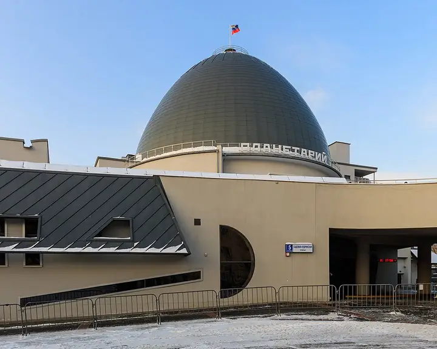

Фото: A.Savin, Free Art License · Wikimedia Commons
Планетарий · ЦАО
Московский планетарий
Звёздный зал под огромным куполом. Работает до 21:00, в выходные до 22:00.
- ₽ · до 1 500 ₽ на человека
- в 3 планах
Позвать сюда: Московский планетарийОткрыть в каталоге: Московский планетарийМаршрут до места: Московский планетарий
Адрес и детали
- Адрес
- Садовая-Кудринская ул., 5, стр. 1
Открыть на Яндекс Картах (в новой вкладке) - Метро
- м. Баррикадная
- Округ
- Центр (ЦАО)
- Цена
- до 1 500 ₽ на человека
Планы с этим местом 3
- Московский планетарий · Планетарий · м. Баррикадная
- 11 минут пешкомShort talk · Кафе
Звёздное небо под огромным куполом планетария, а потом кафе Short talk: кофе, настольная игра и негромкая музыка выручат, если разговор сначала не клеится.
Открыть план: Планетарий и настолкиПозвать сюда: Планетарий и настолки
Фото: A.Savin, Free Art License · Wikimedia Commons
- Московский планетарий · Планетарий · м. Баррикадная
- 11 минут пешкомERWIN.Павильон · Ресторан на пруду
Романтика под куполом планетария и ужин у Патриарших прудов.
Открыть план: Звёзды и ПатрикиПозвать сюда: Звёзды и Патрики
Фото: A.Savin, Free Art License · Wikimedia Commons
- Московский планетарий · Планетарий · м. Баррикадная
- 2 минуты пешкомBlinkGame · Компьютерный клуб
Звёздный зал под огромным куполом планетария, а через две минуты лаунж с четырьмя PS5: сыграть вдвоём на желание.
Открыть план: Звёзды и PS5 на двоихПозвать сюда: Звёзды и PS5 на двоих
Фото: A.Savin, Free Art License · Wikimedia Commons

Похожие рядом


Что ещё рядом


Как позвать
- Выбери план, место или событие — в карточке адрес, цены и маршрут в Яндекс Картах.
- Нажми «Позвать сюда» — соберётся приглашение-игра для свидания или голосование для компании.
- Отправь ссылку в любой мессенджер: тебе ответят, а компания отметит, куда и когда может. Бесплатно и без регистрации.